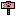
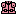

结云券 | 怪物猎人双十字
结云券 - 【MHXX】怪物猎人双十字
| 名称 | 结云券 ゆくもちけっ与 |
||||
|---|---|---|---|---|---|
| 稀有度度 | 5 | 所持 | 99 | 売値 | |
| 説明 | 结云村に貢献した者に村长から与えられる券。加工屋に渡す与…？ | ||||
| [入手] 委托 |
结云村的村长的委托4 结云券 x2 结云村的村长的委托5 结云券 x5 |
| [入手] 交易 |
点数交换【特別品】 1000pts |
| [入手] 其他 |
村的貢献度が一定数溜まる与貰える |
| [用途] 武器 |
 结云大剑3 [强化] 1个 ユクモノ摇晃イド(结云巨刃)5 [强化] 1个 结云大剑3 [强化] 1个 ユクモノ摇晃イド(结云巨刃)5 [强化] 1个  ユクモノ摇晃イド(结云巨刃) [强化] 1个 结云大斩剑【拂云】4 [强化] 2个 ユクモノ摇晃イド(结云巨刃) [强化] 1个 结云大斩剑【拂云】4 [强化] 2个  龙之栖所2 [强化] 1个 龙之栖所2 [强化] 1个  番伞【秋雨】2 [强化] 1个 番伞【斩雨】3 [强化] 2个 番伞【秋雨】2 [强化] 1个 番伞【斩雨】3 [强化] 2个  结云太刀3 [强化] 1个 结云之大太刀5 [强化] 1个 结云太刀3 [强化] 1个 结云之大太刀5 [强化] 1个  真结云太刀 [强化] 1个 灵刀结云・真打4 [强化] 2个 真结云太刀 [强化] 1个 灵刀结云・真打4 [强化] 2个  结云鉈3 [强化] 1个 结云ハチェット5 [强化] 1个 结云鉈3 [强化] 1个 结云ハチェット5 [强化] 1个  真结云鉈 [强化] 1个 结云護山刀【神舞】4 [强化] 2个 真结云鉈 [强化] 1个 结云護山刀【神舞】4 [强化] 2个  真・封龙宝剑3 [强化] 2个 真・封龙宝剑3 [强化] 2个  结云之双剑3 [强化] 1个 结云之双切5 [强化] 1个 结云之双剑3 [强化] 1个 结云之双切5 [强化] 1个  真结云之双剑 [强化] 1个 无双刃结云【祀舞】4 [强化] 2个 狩丸子【白团】 [生产] 1个 狩丸子【白团】3 [强化] 1个 真结云之双剑 [强化] 1个 无双刃结云【祀舞】4 [强化] 2个 狩丸子【白团】 [生产] 1个 狩丸子【白团】3 [强化] 1个  狩丸子【毒天狗团】2 [强化] 1个 狩丸子【火药团】2 [强化] 1个 狩丸子【毒天狗团】2 [强化] 1个 狩丸子【火药团】2 [强化] 1个  结云木锤3 [强化] 1个 结云冲击锤5 [强化] 1个 结云木锤3 [强化] 1个 结云冲击锤5 [强化] 1个  真结云木锤 [强化] 1个 灵木锤结云4 [强化] 2个 真结云木锤 [强化] 1个 灵木锤结云4 [强化] 2个  仙人掌锤2 [强化] 1个 卵锤 [生产] 1个 仙人掌锤2 [强化] 1个 卵锤 [生产] 1个  结云笛3 [强化] 1个 结云ホルン5 [强化] 1个 结云笛3 [强化] 1个 结云ホルン5 [强化] 1个  真结云笛 [强化] 1个 结云雅笛【千鸟】4 [强化] 2个 真结云笛 [强化] 1个 结云雅笛【千鸟】4 [强化] 2个  リュウノトドロキ2 [强化] 1个 リュウノトドロキ2 [强化] 1个  结云之枪3 [强化] 1个 结云穿刺枪5 [强化] 1个 结云之枪3 [强化] 1个 结云穿刺枪5 [强化] 1个  真结云之枪 [强化] 1个 神枪・结云丸4 [强化] 2个 真结云之枪 [强化] 1个 神枪・结云丸4 [强化] 2个  合战枪 [生产] 1个 合战枪3 [强化] 1个 合战枪【鯨波】4 [强化] 2个 合战枪 [生产] 1个 合战枪3 [强化] 1个 合战枪【鯨波】4 [强化] 2个  结云之铳枪3 [强化] 1个 洁云之爆裂铳枪5 [强化] 1个 结云之铳枪3 [强化] 1个 洁云之爆裂铳枪5 [强化] 1个  真结云之铳枪 [强化] 1个 仙炮枪结云4 [强化] 2个 真结云之铳枪 [强化] 1个 仙炮枪结云4 [强化] 2个  竹铳枪【驱鸟】2 [强化] 1个 竹铳枪【驱鸟】3 [强化] 1个 竹铳枪【退狮】4 [强化] 2个 竹铳枪【驱鸟】2 [强化] 1个 竹铳枪【驱鸟】3 [强化] 1个 竹铳枪【退狮】4 [强化] 2个  艾露猫套娃2 [强化] 1个 福福艾露猫套娃3 [强化] 2个 艾露猫套娃2 [强化] 1个 福福艾露猫套娃3 [强化] 2个  结云之斩击斧3 [强化] 1个 结云之大斩击斧5 [强化] 1个 结云之斩击斧3 [强化] 1个 结云之大斩击斧5 [强化] 1个  真结云之斩击斧 [强化] 1个 开山斩击斧结云4 [强化] 2个 真结云之斩击斧 [强化] 1个 开山斩击斧结云4 [强化] 2个  结云弓3 [强化] 1个 结云大弓5 [强化] 1个 结云弓3 [强化] 1个 结云大弓5 [强化] 1个  真结云弓 [强化] 1个 灵弓结云【破军】4 [强化] 2个 真结云弓 [强化] 1个 灵弓结云【破军】4 [强化] 2个  竹取弓2 [强化] 1个 竹取弓3 [强化] 1个 竹取弓4 [强化] 1个 竹取弓【翁】5 [强化] 2个 竹取弓2 [强化] 1个 竹取弓3 [强化] 1个 竹取弓4 [强化] 1个 竹取弓【翁】5 [强化] 2个  结云之弩3 [强化] 1个 结云之弹弩5 [强化] 1个 结云之弩3 [强化] 1个 结云之弹弩5 [强化] 1个  真结云之弩 [强化] 1个 结云灵弩【弹雨】3 [强化] 2个 真结云之弩 [强化] 1个 结云灵弩【弹雨】3 [强化] 2个  瓢弹2 [强化] 1个 瓢弹【千成】4 [强化] 2个 瓢弹2 [强化] 1个 瓢弹【千成】4 [强化] 2个  结云重弩3 [强化] 1个 洁云加农炮5 [强化] 1个 结云重弩3 [强化] 1个 洁云加农炮5 [强化] 1个  真结云重弩 [强化] 1个 结云连山重弩4 [强化] 2个 真结云重弩 [强化] 1个 结云连山重弩4 [强化] 2个 |
| [用途] 防具生产 |
 撫子【布冠】 [生产] 1个 撫子【布冠】 [生产] 1个  结云斗笠・天 [生产] 1个 结云斗笠・天 [生产] 1个  店员兜帽 [生产] 1个 水手兜帽 [生产] 1个 店员兜帽 [生产] 1个 水手兜帽 [生产] 1个  撫子・華【布冠】 [生产] 1个 撫子・華【布冠】 [生产] 1个  桐花【盔】 [生产] 2个 桐花【盔】 [生产] 2个  撫子【花衣】 [生产] 1个 撫子【花衣】 [生产] 1个  结云上衣・天 [生产] 1个 结云上衣・天 [生产] 1个  店员上衣 [生产] 1个 水手上衣 [生产] 1个 店员上衣 [生产] 1个 水手上衣 [生产] 1个  撫子・華【花衣】 [生产] 1个 撫子・華【花衣】 [生产] 1个  桐花【胸甲】 [生产] 2个 桐花【胸甲】 [生产] 2个  撫子【蕾袖】 [生产] 1个 撫子【蕾袖】 [生产] 1个  结云护手・天 [生产] 1个 结云护手・天 [生产] 1个  店员手套 [生产] 1个 水手手套 [生产] 1个 店员手套 [生产] 1个 水手手套 [生产] 1个  撫子・華【蕾袖】 [生产] 1个 撫子・華【蕾袖】 [生产] 1个  桐花【护手】 [生产] 2个 桐花【护手】 [生产] 2个  撫子【枝垂】 [生产] 1个 撫子【枝垂】 [生产] 1个  结云腰带・天 [生产] 1个 结云腰带・天 [生产] 1个  店员ス短裙 [生产] 1个 水手ス短裙 [生产] 1个 店员ス短裙 [生产] 1个 水手ス短裙 [生产] 1个  撫子・華【枝垂】 [生产] 1个 美食猫S腰带 [生产] 1个 撫子・華【枝垂】 [生产] 1个 美食猫S腰带 [生产] 1个  桐花【腰甲】 [生产] 2个 桐花【腰甲】 [生产] 2个  撫子【球袴】 [生产] 1个 撫子【球袴】 [生产] 1个  结云长裤・天 [生产] 1个 结云长裤・天 [生产] 1个  店员袜 [生产] 1个 水手袜 [生产] 1个 店员袜 [生产] 1个 水手袜 [生产] 1个  撫子・華【球袴】 [生产] 1个 撫子・華【球袴】 [生产] 1个  桐花【具足】 [生产] 2个 桐花【具足】 [生产] 2个 |
| [用途] 防具强化 |
 结云系列 Lv5 [强化] 1个 结云系列 Lv12 [强化] 1个 撫子/桔梗系列 Lv4 [强化] 1个 撫子/桔梗系列 Lv10 [强化] 1个 入浴系列 Lv4 [强化] 1个 入浴系列 Lv10 [强化] 1个 结云天/地系列 Lv4 [强化] 1个 结云天/地系列 Lv8 [强化] 1个 高级入浴系列 Lv4 [强化] 1个 高级入浴系列 Lv8 [强化] 1个 桐花/三葵系列 Lv5 [强化] 1个 桐花/三葵系列 Lv7 [强化] 1个 隼刃的羽饰り Lv5 [强化] 2个 隼刃的羽饰り Lv7 [强化] 1个 水狐的耳环 Lv5 [强化] 2个 水狐的耳环 Lv7 [强化] 1个 结云系列 Lv5 [强化] 1个 结云系列 Lv12 [强化] 1个 撫子/桔梗系列 Lv4 [强化] 1个 撫子/桔梗系列 Lv10 [强化] 1个 入浴系列 Lv4 [强化] 1个 入浴系列 Lv10 [强化] 1个 结云天/地系列 Lv4 [强化] 1个 结云天/地系列 Lv8 [强化] 1个 高级入浴系列 Lv4 [强化] 1个 高级入浴系列 Lv8 [强化] 1个 桐花/三葵系列 Lv5 [强化] 1个 桐花/三葵系列 Lv7 [强化] 1个 隼刃的羽饰り Lv5 [强化] 2个 隼刃的羽饰り Lv7 [强化] 1个 水狐的耳环 Lv5 [强化] 2个 水狐的耳环 Lv7 [强化] 1个 |
| [用途] 装饰品 |
仙湯珠【1】 [生产] 1个 |
| [用途] 随从猫装备 |
 グリルネコ大锤 [生产] 1个 グリルネコ大锤 [生产] 1个  结云ネコ扇子 [生产] 1个 结云ネコ扇子 [生产] 1个  结云ネコ木刀・鰹節 [生产] 1个ネコノバンサン [生产] 1个 结云Ｓネコ扇子 [生产] 1个 丸鸟ネコ面具 [生产] 1个 丸鸟ネコ背心 [生产] 1个 ニャでしこ【布冠】 [生产] 1个 ニャでしこ【花衣】 [生产] 1个 结云Ｓネコ斗笠 [生产] 1个  结云Ｓネコ上衣 [生产] 1个丸鸟Ｓネコ面具 [生产] 1个 丸鸟Ｓネコ背心 [生产] 1个 ニャでしこ華【布冠】 [生产] 1个 ニャでしこ華【花衣】 [生产] 1个 ニャでしこ雅【布冠】 [生产] 1个 ニャでしこ雅【花衣】 [生产] 1个 |
| [用途] 山菜爷 |
【フィールド共通1】 山菜爷与交换 结云券 → 返回玉 1个 |